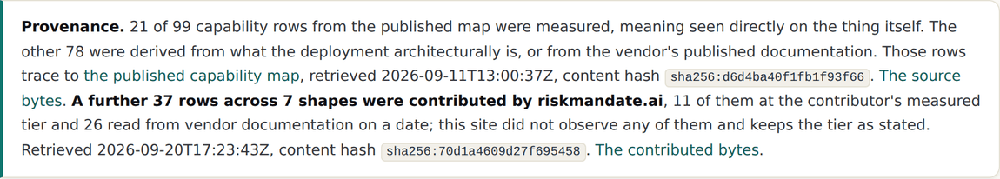
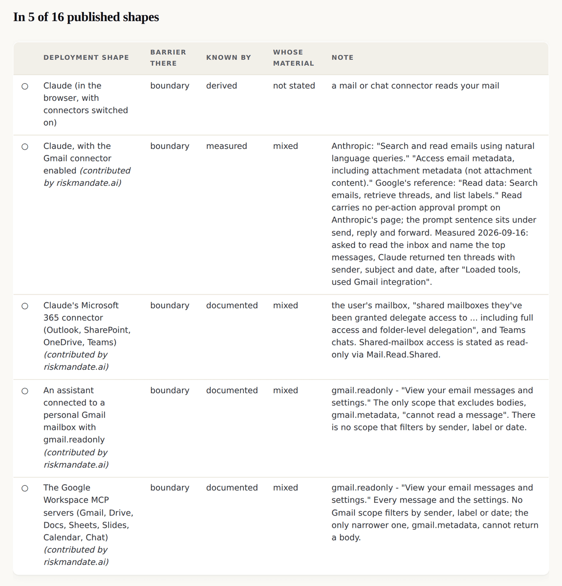
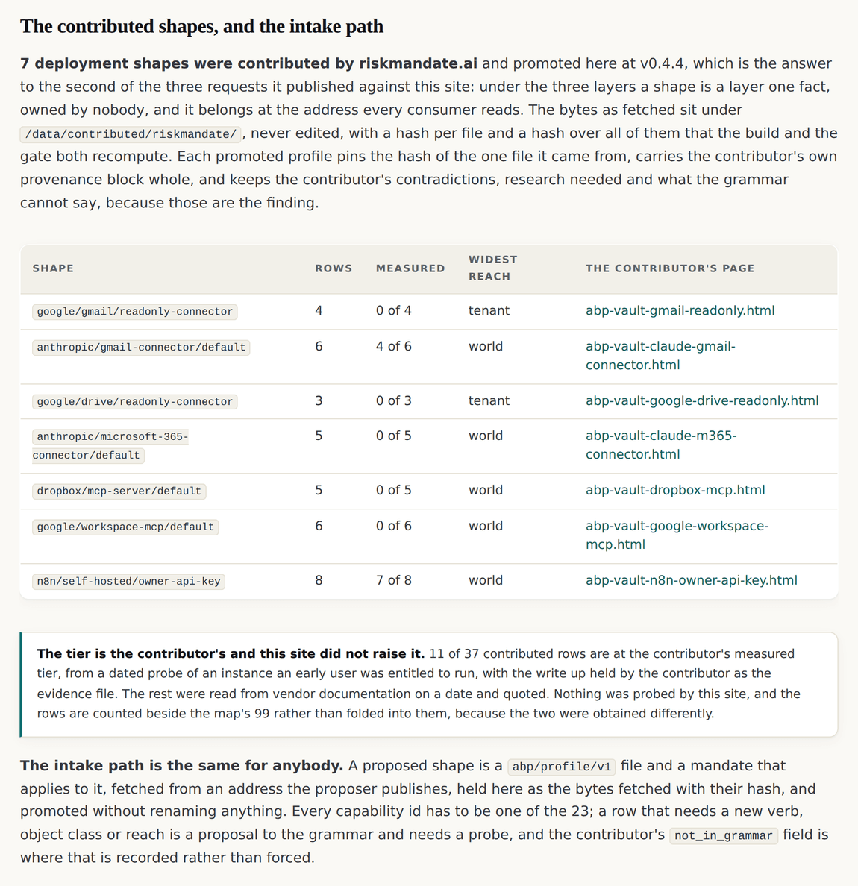
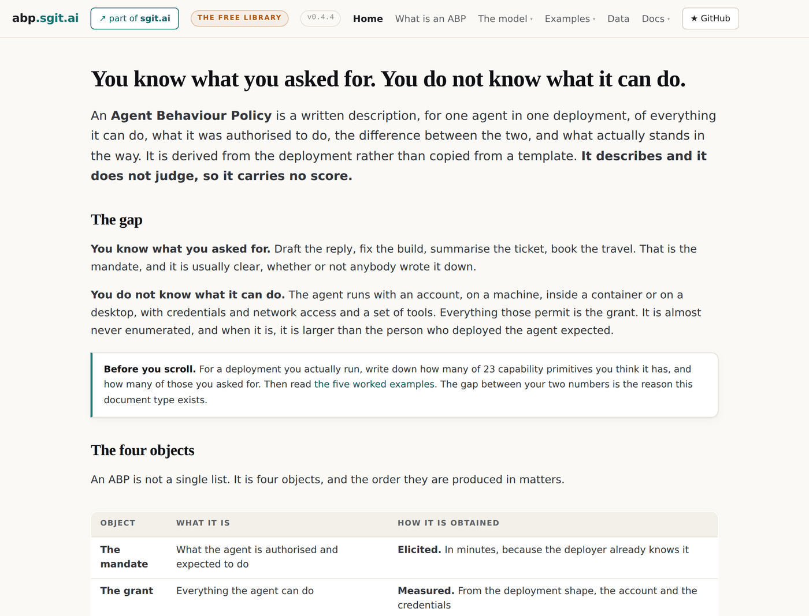

v0.4.4: Seven deployment shapes somebody else measured, promoted with their provenance intact
A consumer of this data built seven shapes this site did not have, one of them from a dated probe of a live instance. Under the three layers those are facts owned by nobody, so they belong at the address every consumer reads. The bytes are held unchanged and the evidence tier stays the contributor's.
v0.4.4 tag, so it shows the site as it stood at that release and not as it stands today. Read on to v0.5.0, or back to v0.4.3.Somebody else did the work first
A commercial site that renders against this site's data had, by the middle of September, built seven deployment shapes this site did not hold: two Gmail scopes, a Drive scope, a Microsoft 365 connector, a Dropbox server, the Google Workspace servers, and a self-hosted automation platform measured on a live instance by an early user's agent.
It had also published a request asking this site to carry them, and marked that request as the one that unblocks a product. Under the three layers the answer is not a favour, it is the architecture: a deployment shape is a layer one fact, owned by nobody, and it belongs at the address every consumer reads rather than inside one consumer's vaults.
The bytes are held, not copied
Twenty one files were fetched on 20 September from the contributor's public endpoint: a grant, a mandate and a vault record per shape. They sit under data/contributed/riskmandate/ exactly as they arrived, with a hash per file and a hash over all of them, and both the build and the gate recompute the lot and refuse to proceed if a byte moved.
Each promoted profile then pins the hash of the one file it came from. So a byte that changes after the fetch fails the build in three places at once, which is the check being tested rather than trusted:
$ printf '\n' >> data/contributed/riskmandate/dropbox-mcp/grant.json
$ node admin/build/validate.js
validate: 3 error(s)
x data/contributed/riskmandate/dropbox-mcp/grant.json hashes to 01884076f1c4...,
the manifest says 90b9428222dc... -- the contributed bytes were edited
after the fetch
x data/contributed/riskmandate hashes to sha256:a059adc85761fd5..., its
manifest says sha256:70d1a4609d27f69...
x data/profiles/dropbox/mcp-server/default.json: pins sha256:90b9428222dc4a2...,
the contributed file hashes to sha256:01884076f1c4ae2...
What travels with a contributed shape
Promotion renames nothing and drops nothing. Every capability id has to be one of the twenty three, is_bounded is recomputed from the barrier and the undo class comes from the grammar. Everything else the contributor wrote travels whole, including three things this site had no field for.
| What the contributor carries | Why it is kept |
|---|---|
| Their own provenance block | the vendor pages read and quoted on a date, or a dated probe of an instance they were entitled to run. This site did not observe any of it |
contradictions | where a product's advertised capability and its granted scope disagree, both quoted, both dated, published unresolved. That is the finding |
research_needed | the questions a vendor page could not settle. A named absence beats a hidden one |
not_in_grammar | what the shape can do that no primitive covers. A row that needs a new verb, object class or reach is a proposal to the grammar and needs a probe, so it is recorded rather than forced into a primitive that nearly fits |
The counts stay apart
The site went from nine shapes to sixteen and from eight starting mandates to fifteen in one release. The rows do not merge.

The first rows that say whose material
The property declared one release earlier had no values in it. The contributed shapes arrived with thirty seven rows that state one, and the mailbox and drive shapes are where the value earns its place.

A scope is not a tool
One node type arrived with the connector shapes. A coding agent reaches a capability through a tool it runs. A connector reaches one through a scope a person consented to once, in the vendor's own identifier, and the two are not the same kind of thing.
So gmail.readonly is a node in the vendor's word, never translated, joined to the shape by scoped_by and to what it reaches by permits. Nine of them matched at this release.
What this release deliberately does not do
- It does not import the contributor's nine vaults for this site's own shapes. Those pin this site, and importing them would be a loop.
- It gives the contributed shapes no example page. Their ABPs exist as data, and the contributor renders each one live from its own vault. This site links to those by address rather than rebuilding them.
- It does not raise anybody's evidence tier. A row measured by a consumer's user is that user's observation, and this site holds the claim rather than restating it as its own.


The data layer · The contributed manifest · The deployment shape universe · v0.4.4's own release record